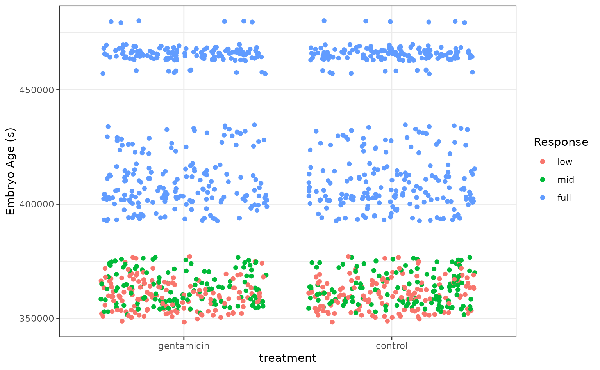

In this vignette, we’ll tackle a multiclass classification problem using the stacks package. This vignette assumes that you’re familiar with tidymodels “proper,” as well as the basic grammar of the package, and have seen it implemented on numeric data; if this is not the case, check out the “Getting Started With stacks” vignette!
In this example, we’ll make use of the tree_frogs data
exported with stacks, giving experimental results on
hatching behavior of red-eyed tree frog embryos!
Red-eyed tree frog (RETF) embryos can hatch earlier than their normal 7ish days if they detect potential predator threat. Researchers wanted to determine how, and when, these tree frog embryos were able to detect stimulus from their environment. To do so, they subjected the embryos at varying developmental stages to “predator stimulus” by jiggling the embryos with a blunt probe. Beforehand, though, some of the embryos were treated with gentamicin, a compound that knocks out their lateral line (a sensory organ). Researcher Julie Jung and her crew found that these factors inform whether an embryo hatches prematurely or not!
In this article, we’ll use most all of the variables in
tree_frogs to predict reflex, a measure of ear
function called the vestibulo-ocular reflex (VOR), categorized into
bins. Ear function increases from factor levels “low”, to “mid”, to
“full”.
Let’s plot the data to get a sense for how separable these groups are.
theme_set(theme_bw())
ggplot(tree_frogs) +
aes(x = treatment, y = age, color = reflex) +
geom_jitter() +
labs(y = "Embryo Age (s)",
x = "treatment",
color = "Response")
It looks like the embryo age is pretty effective at picking out embryos with full VOR function, but the problem gets tougher for the less developed embryos! Let’s see how well the stacked ensemble can classify these tree frogs.
Defining candidate ensemble members
As in the numeric prediction setting, defining the candidate ensemble members is undoubtedly the longest part of the ensembling process with stacks. First, splitting up the training data, generating resamples, and setting some options that will be used by each model definition.
# some setup: resampling and a basic recipe
set.seed(1)
tree_frogs_split <- initial_split(tree_frogs)
tree_frogs_train <- training(tree_frogs_split)
tree_frogs_test <- testing(tree_frogs_split)
folds <- rsample::vfold_cv(tree_frogs_train, v = 5)
tree_frogs_rec <-
recipe(reflex ~ ., data = tree_frogs_train) %>%
step_dummy(all_nominal_predictors(), -reflex) %>%
step_zv(all_predictors())
tree_frogs_wflow <-
workflow() %>%
add_recipe(tree_frogs_rec)We also need to use the same control settings as in the numeric response setting:
ctrl_grid <- control_stack_grid()We’ll define two different model definitions to try to predict
reflex—a random forest and a neural network.
Starting out with a random forest:
rand_forest_spec <-
rand_forest(
mtry = tune(),
min_n = tune(),
trees = 500
) %>%
set_mode("classification") %>%
set_engine("ranger")
rand_forest_wflow <-
tree_frogs_wflow %>%
add_model(rand_forest_spec)
rand_forest_res <-
tune_grid(
object = rand_forest_wflow,
resamples = folds,
grid = 10,
control = ctrl_grid
)Now, moving on to the neural network model definition:
nnet_spec <-
mlp(hidden_units = tune(), penalty = tune(), epochs = tune()) %>%
set_mode("classification") %>%
set_engine("nnet")
nnet_rec <-
tree_frogs_rec %>%
step_normalize(all_predictors())
nnet_wflow <-
tree_frogs_wflow %>%
add_model(nnet_spec) %>%
update_recipe(nnet_rec)
nnet_res <-
tune_grid(
object = nnet_wflow,
resamples = folds,
grid = 10,
control = ctrl_grid
)With these model definitions fully specified, we’re ready to start putting together an ensemble!
Putting together a stack
Building the stacked ensemble, now, only takes a few lines:
tree_frogs_model_st <-
# initialize the stack
stacks() %>%
# add candidate members
add_candidates(rand_forest_res) %>%
add_candidates(nnet_res) %>%
# determine how to combine their predictions
blend_predictions() %>%
# fit the candidates with nonzero stacking coefficients
fit_members()
tree_frogs_model_st
#> # A tibble: 10 × 4
#> member type weight class
#> <chr> <chr> <dbl> <fct>
#> 1 .pred_full_nnet_res_1_04 mlp 21.6 full
#> 2 .pred_mid_nnet_res_1_04 mlp 18.2 mid
#> 3 .pred_mid_rand_forest_res_1_05 rand_forest 13.6 low
#> 4 .pred_mid_rand_forest_res_1_08 rand_forest 6.47 mid
#> 5 .pred_mid_nnet_res_1_01 mlp 4.60 low
#> 6 .pred_mid_nnet_res_1_03 mlp 4.58 low
#> 7 .pred_mid_rand_forest_res_1_07 rand_forest 4.07 low
#> 8 .pred_mid_nnet_res_1_10 mlp 3.49 mid
#> 9 .pred_full_nnet_res_1_01 mlp 3.09 full
#> 10 .pred_mid_nnet_res_1_09 mlp 1.43 midTo make sure that we have the right trade-off between minimizing the
number of members and optimizing performance, we can use the
autoplot() method:
autoplot(tree_frogs_model_st)
To show the relationship more directly:
autoplot(tree_frogs_model_st, type = "members")
If these results were not good enough,
blend_predictions() could be called again with different
values of penalty. As it is,
blend_predictions() picks the penalty parameter with the
numerically optimal results. To see the top results:
autoplot(tree_frogs_model_st, type = "weights")
There are multiple facets since the ensemble members can have different effects on different classes.
To identify which model configurations were assigned what stacking
coefficients, we can make use of the collect_parameters()
function:
collect_parameters(tree_frogs_model_st, "rand_forest_res")
#> # A tibble: 60 × 6
#> member mtry min_n class terms coef
#> <chr> <int> <int> <chr> <chr> <dbl>
#> 1 rand_forest_res_1_01 1 26 low .pred_mid_rand_forest_res… 0
#> 2 rand_forest_res_1_01 1 26 low .pred_full_rand_forest_re… 0
#> 3 rand_forest_res_1_01 1 26 mid .pred_mid_rand_forest_res… 0
#> 4 rand_forest_res_1_01 1 26 mid .pred_full_rand_forest_re… 0
#> 5 rand_forest_res_1_01 1 26 full .pred_mid_rand_forest_res… 0
#> 6 rand_forest_res_1_01 1 26 full .pred_full_rand_forest_re… 0
#> 7 rand_forest_res_1_02 2 33 low .pred_mid_rand_forest_res… 0
#> 8 rand_forest_res_1_02 2 33 low .pred_full_rand_forest_re… 0
#> 9 rand_forest_res_1_02 2 33 mid .pred_mid_rand_forest_res… 0
#> 10 rand_forest_res_1_02 2 33 mid .pred_full_rand_forest_re… 0
#> # ℹ 50 more rowsThis object is now ready to predict with new data!
Computing the ROC AUC for the model:
Looks like our predictions were pretty strong! How do the stacks
predictions perform, though, as compared to the members’ predictions? We
can use the members argument to generate predictions from
each of the ensemble members.
tree_frogs_pred <-
tree_frogs_test %>%
select(reflex) %>%
bind_cols(
predict(
tree_frogs_model_st,
tree_frogs_test,
type = "class",
members = TRUE
)
)
tree_frogs_pred
#> # A tibble: 303 × 15
#> reflex .pred_class .pred_class_rand_forest_res…¹ .pred_class_rand_for…²
#> <fct> <fct> <fct> <fct>
#> 1 full full full full
#> 2 mid mid low mid
#> 3 mid mid mid mid
#> 4 mid mid low low
#> 5 full full full full
#> 6 full full full full
#> 7 full full full full
#> 8 full full full full
#> 9 full full full full
#> 10 full full full full
#> # ℹ 293 more rows
#> # ℹ abbreviated names: ¹.pred_class_rand_forest_res_1_05,
#> # ².pred_class_rand_forest_res_1_07
#> # ℹ 11 more variables: .pred_class_nnet_res_1_07 <fct>,
#> # .pred_class_nnet_res_1_02 <fct>, .pred_class_nnet_res_1_03 <fct>,
#> # .pred_class_nnet_res_1_01 <fct>,
#> # .pred_class_rand_forest_res_1_09 <fct>, …
map(
colnames(tree_frogs_pred),
~mean(tree_frogs_pred$reflex == pull(tree_frogs_pred, .x))
) %>%
set_names(colnames(tree_frogs_pred)) %>%
as_tibble() %>%
pivot_longer(c(everything(), -reflex))
#> # A tibble: 14 × 3
#> reflex name value
#> <dbl> <chr> <dbl>
#> 1 1 .pred_class 0.884
#> 2 1 .pred_class_rand_forest_res_1_05 0.855
#> 3 1 .pred_class_rand_forest_res_1_07 0.865
#> 4 1 .pred_class_nnet_res_1_07 0.868
#> 5 1 .pred_class_nnet_res_1_02 0.848
#> 6 1 .pred_class_nnet_res_1_03 0.845
#> 7 1 .pred_class_nnet_res_1_01 0.842
#> 8 1 .pred_class_rand_forest_res_1_09 0.881
#> 9 1 .pred_class_rand_forest_res_1_08 0.881
#> 10 1 .pred_class_nnet_res_1_05 0.789
#> 11 1 .pred_class_nnet_res_1_09 0.835
#> 12 1 .pred_class_nnet_res_1_06 0.858
#> 13 1 .pred_class_nnet_res_1_04 0.855
#> 14 1 .pred_class_nnet_res_1_10 0.851Voilà! You’ve now made use of the stacks package to predict tree frog embryo ear function using a stacked ensemble!